TUGAS 3 – BASIS DATA (MSIM4206)
| Nama | : | Farhan Aditya |
| NIM | : | 054750333 |
| Program Studi | : | Sistem Informasi |
| Mata Kuliah | : | MSIM4206 – Basis Data |
SOAL
Berdasarkan Panduan Praktikum Mata Kuliah MSIM4206 Basis Data Edisi 2 dan instruksi Tugas 3:
- Praktikum Transaksi: Lakukan evaluasi storage engine InnoDB pada basis data rumah sakit, uji coba kontrol transaksi (
COMMIT,ROLLBACK,SAVEPOINT), penambahan tabelobatdantransaksi_obat, serta pembuatan dan pengujian trigger pengurangan stok otomatis. - Praktikum Basis Data Terdistribusi: Lakukan konfigurasi replikasi basis data Master–Slave (multi-node), verifikasi status aktif replikasi (
Slave_IO_RunningdanSlave_SQL_Running), serta uji sinkronisasi data secara real-time.
Kegiatan praktik dilaporkan dalam naskah laporan formal dan rekaman video yang memuat: (a) perkenalan identitas mahasiswa, (b) langkah-langkah praktik beserta aktivitas mahasiswa, (c) hasil praktik, dan (d) kata penutup.

JAWAB
A. Langkah-Langkah Praktik
A.1 Analisis Kebutuhan Basis Data & Keterkaitan Tugas 2
Praktikum Tugas 3 merupakan kelanjutan langsung dari basis data rumah_sakit yang telah dirancang pada Tugas 2. Pada tugas sebelumnya, telah dibuat 6 tabel utama: administrator, dokter, pasien, dokter_admin, pasien_dokter, dan daftar.
Pada Tugas 3 ini, basis data dikembangkan lebih lanjut dengan menambahkan:
- Tabel Katalog Obat (
obat): Menyimpan daftar obat beserta persediaan (stok). - Tabel Penjualan/Transaksi Obat (
transaksi_obat): Mencatat transaksi pembelian obat oleh pasien, yang berelasi dengan tabelpasiendanobat. - Event Trigger (
tg_jual): Menjamin integritas data persediaan dengan memicu pengurangan kuantitas stok pada tabelobatsetiap kali transaksi baru dicatat pada tabeltransaksi_obat. - Arsitektur Terdistribusi (Replikasi): Menghubungkan server basis data Master (port 3306) ke server basis data Slave (port 3307) agar seluruh perubahan data tersinkronisasi secara otomatis.
Rincian atribut 2 tabel baru pada Tugas 3:
| Tabel | Atribut | Tipe Data | Keterangan |
|---|---|---|---|
| obat | id_obat |
INT(6) | Primary Key, AUTO_INCREMENT |
kode_obat | VARCHAR(5) | Kode katalog unik obat | |
nama_obat | VARCHAR(30) | Nama komersial/generik obat | |
harga | INT(10) | Harga satuan obat (Rupiah) | |
stok | INT(5) | Jumlah persediaan fisik obat | |
| transaksi_obat | id_transaksi |
INT(3) | Primary Key, AUTO_INCREMENT |
id_pasien | INT(3) | Foreign Key → pasien.id_pasien | |
id_obat | INT(3) | Foreign Key → obat.id_obat | |
jumlah | INT(10) | Jumlah kuantitas obat yang dibeli | |
total_harga | INT(10) | Total biaya transaksi |
A.2 Menjalankan Layanan Basis Data Multi-Node
Untuk menjalankan praktikum basis data terdistribusi tanpa memerlukan dua komputer fisik atau VM yang berat, lingkungan diorkestrasi menggunakan Docker Compose dengan 4 layanan terisolasi:
mysql_tugas3_master(Port 3306): DBMS Server Master dengan binary logging aktif (server-id=1).mysql_tugas3_slave(Port 3307): DBMS Server Slave dengan relay logging aktif (server-id=2).pma_tugas3_master(Port 8080): phpMyAdmin untuk inspeksi visual server Master.pma_tugas3_slave(Port 8081): phpMyAdmin untuk inspeksi visual server Slave.
docker compose up -dA.3 Masuk ke MySQL Monitor Server Master (CLI)
Buka terminal dan masuk ke antarmuka interaktif MySQL monitor pada container Master sebagai user root, lalu aktifkan basis data rumah_sakit:
docker exec -it mysql_tugas3_master mysql -u root -proot
SHOW DATABASES;
USE rumah_sakit;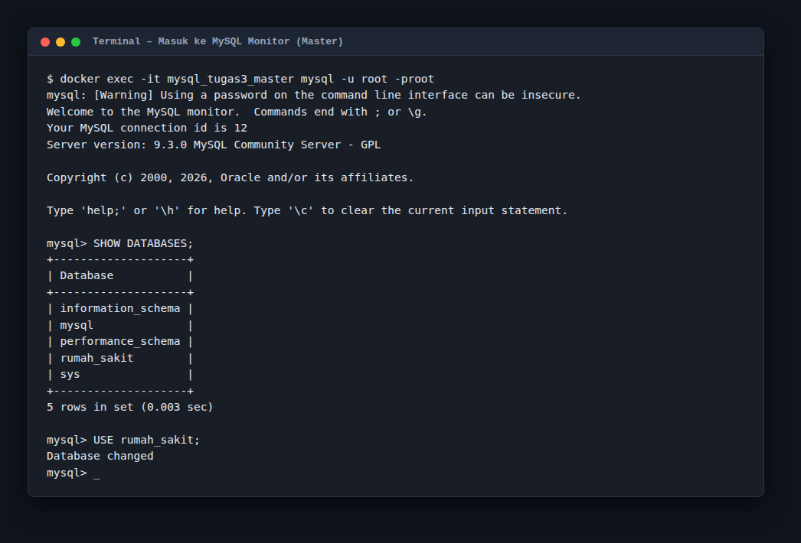
A.4 Memeriksa Status Storage Engine InnoDB
Transaksi ACID pada MySQL mensyaratkan penggunaan storage engine transaksional, yaitu InnoDB. Periksa status engine dari tabel-tabel basis data rumah_sakit:
SHOW TABLE STATUS FROM rumah_sakit WHERE Name IN ('pasien', 'dokter', 'administrator')\G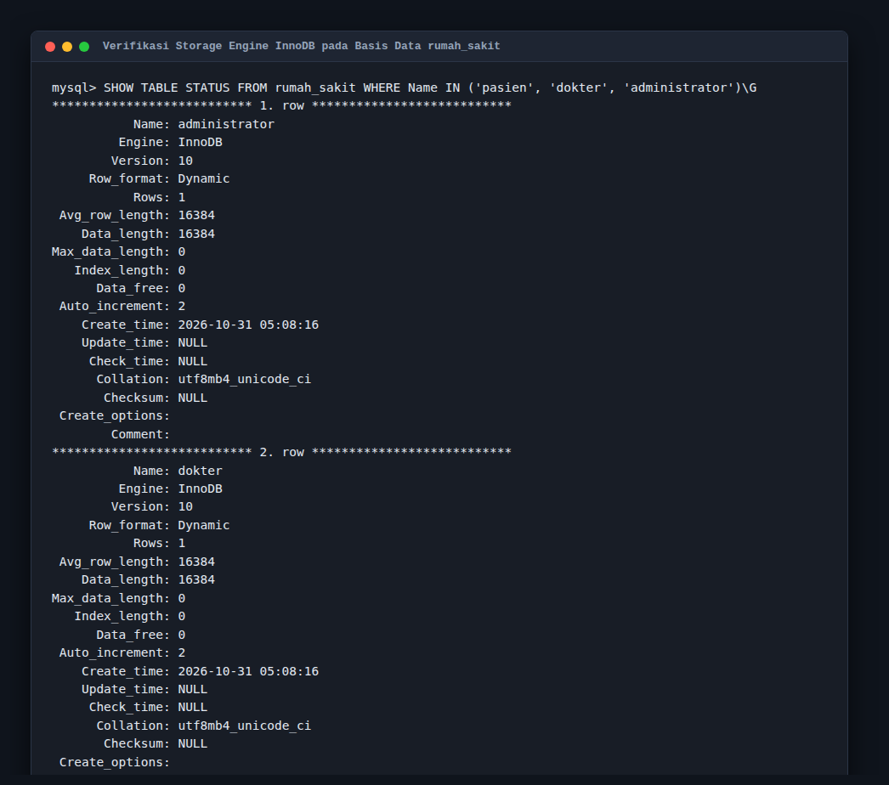
Hasil pemeriksaan membuktikan seluruh tabel telah menggunakan Engine: InnoDB, sehingga fitur transaksi, rollback, foreign key constraint, dan crash recovery didukung secara penuh.
A.5 Praktikum Kontrol Transaksi (Commit, Rollback, dan Savepoint)
1) Pengujian Transaksi 1 (Tanpa Commit)
Pada pengujian pertama, dibuat stored procedure transaksi1 yang menyisipkan data pasien baru (id_pasien=6, nama_pasien='Tito'), namun transaksi sengaja tidak diakhiri dengan perintah COMMIT;.
DELIMITER $$
CREATE PROCEDURE transaksi1()
BEGIN
START TRANSACTION;
INSERT INTO pasien (id_pasien, nama_pasien, alamat_pasien, jenis_kelamin)
VALUES (6, 'Tito', 'Jl Pakis haji no 25', 1);
END$$
DELIMITER ;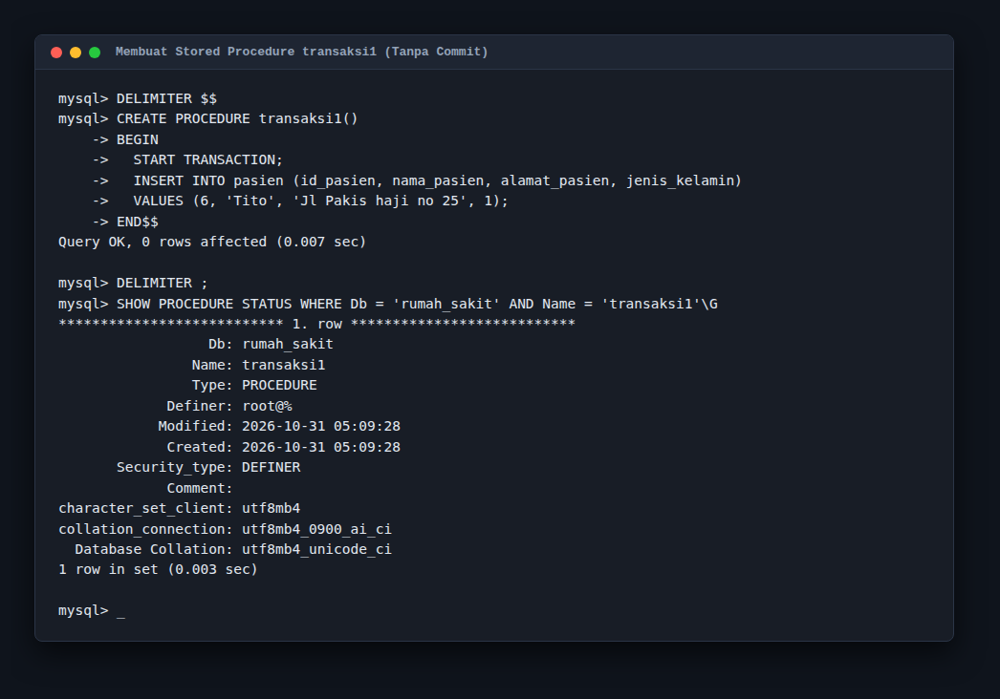
Jalankan prosedur dengan perintah CALL transaksi1();, lalu periksa isi tabel pasien pada sesi koneksi yang baru:
CALL transaksi1();
SELECT * FROM pasien;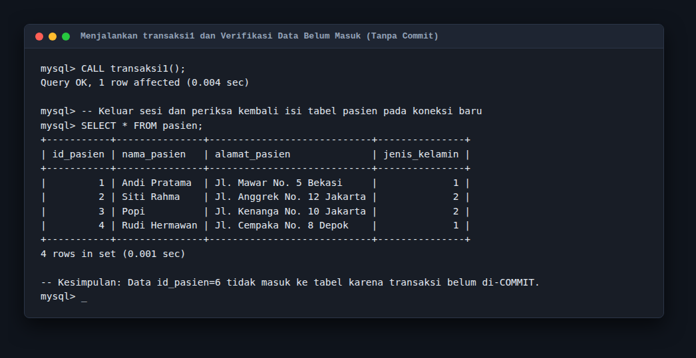
Analisis: Data pasien Tito (id_pasien=6) tidak tersimpan di dalam basis data. Hal ini membuktikan prinsip transaksi bahwa perubahan data dalam transaksi yang tidak di-COMMIT bersifat sementara dan akan dibatalkan (auto-rollback) saat sesi berakhir.
2) Pengujian Transaksi 2 (Dengan Commit)
Modifikasi prosedur transaksi dengan menambahkan perintah COMMIT; di akhir blok perintah:
DELIMITER $$
CREATE PROCEDURE transaksi2()
BEGIN
START TRANSACTION;
INSERT INTO pasien (id_pasien, nama_pasien, alamat_pasien, jenis_kelamin)
VALUES (6, 'Tito', 'Jl Pakis haji no 25', 1);
COMMIT;
END$$
DELIMITER ;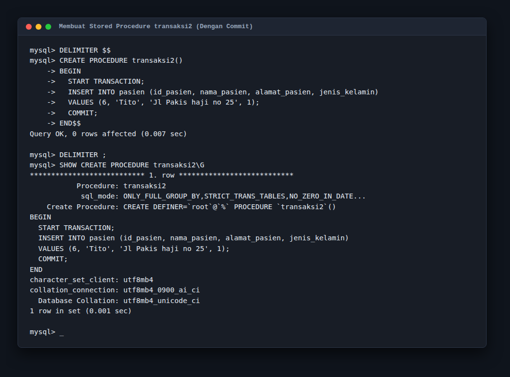
Jalankan prosedur transaksi2() dan periksa isi tabel pasien:
CALL transaksi2();
SELECT * FROM pasien;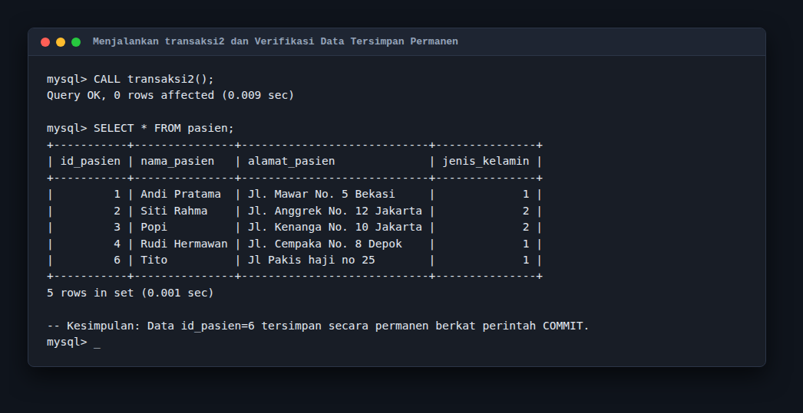
Analisis: Data pasien Tito (id_pasien=6) sekarang telah tersimpan permanen di dalam tabel pasien karena pernyataan transaksi telah disahkan secara permanen (committed).
3) Pengujian Transaksi 3 (Rollback Sederhana)
Pernyataan ROLLBACK digunakan untuk membatalkan seluruh operasi yang sedang berjalan sebelum transaksi disahkan. Sebagai contoh, dilakukan perintah update nama pasien id_pasien=3 (yang awalnya bernama 'Popi') menjadi 'Danar', diikuti perintah ROLLBACK;:
START TRANSACTION;
UPDATE pasien SET nama_pasien = 'Danar' WHERE id_pasien = 3;
ROLLBACK;
SELECT * FROM pasien WHERE id_pasien = 3;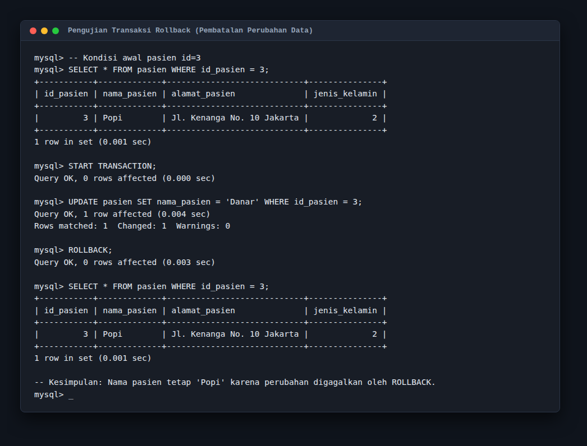
Analisis: Nama pasien dengan id_pasien=3 tetap bernilai 'Popi'. Perubahan nama menjadi 'Danar' berhasil digagalkan dan kondisi data dikembalikan persis ke titik awal sebelum transaksi dimulai.
4) Pengujian Transaksi 4 (Rollback Parsial & Commit)
Skenario transaksi 4 melakukan penyisipan pasien baru (id_pasien=7, nama 'Septin') yang kemudian di-ROLLBACK, diikuti pembaruan nama pasien id_pasien=3 menjadi 'Septin' yang di-COMMIT:
DELIMITER $$
CREATE PROCEDURE transaksi4()
BEGIN
START TRANSACTION;
INSERT INTO pasien (id_pasien, nama_pasien, alamat_pasien, jenis_kelamin)
VALUES (7, 'Septin', 'Jl Anggrek no 5', 2);
ROLLBACK;
START TRANSACTION;
UPDATE pasien SET nama_pasien = 'Septin' WHERE id_pasien = 3;
COMMIT;
END$$
DELIMITER ;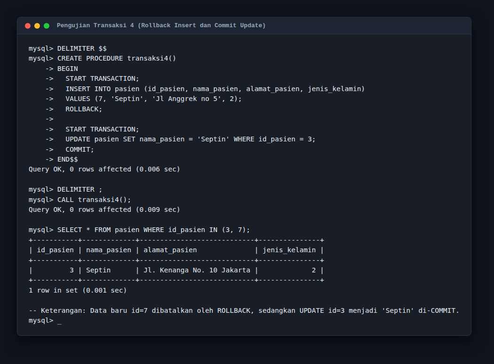
Analisis: Data id_pasien=7 tidak masuk ke dalam tabel karena dibatalkan oleh ROLLBACK, sedangkan data id_pasien=3 berhasil diperbarui namanya menjadi 'Septin' karena transaksi kedua disahkan oleh COMMIT.
5) Pengujian Transaksi 5 (Savepoint / Check Point)
Savepoint memungkinkan transaksi di-rollback secara parsial ke titik tertentu tanpa harus membatalkan seluruh isi transaksi:
DELIMITER $$
CREATE PROCEDURE transaksi5()
BEGIN
START TRANSACTION;
INSERT INTO pasien (id_pasien, nama_pasien, alamat_pasien, jenis_kelamin)
VALUES (7, 'Dedi', 'Jl Melati no 1', 1);
SAVEPOINT point1;
INSERT INTO pasien (id_pasien, nama_pasien, alamat_pasien, jenis_kelamin)
VALUES (8, 'Riko', 'Jl Mawar no 2', 1);
ROLLBACK TO point1;
INSERT INTO pasien (id_pasien, nama_pasien, alamat_pasien, jenis_kelamin)
VALUES (9, 'Maya', 'Jl Melur no 3', 2);
COMMIT;
END$$
DELIMITER ;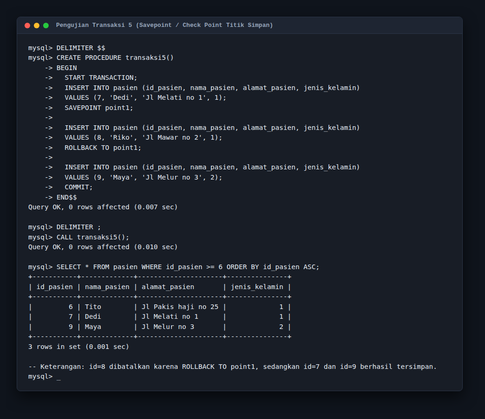
Analisis: Pasien Dedi (id=7) dan Maya (id=9) berhasil tersimpan, sedangkan pasien Riko (id=8) berhasil digagalkan karena dibatalkan ke titik SAVEPOINT point1.
A.6 Praktikum Trigger Pengurangan Stok Obat
1) Membuat Tabel obat
Tabel obat menyimpan data master katalog obat dan stok persediaan:
CREATE TABLE obat (
id_obat INT(6) AUTO_INCREMENT PRIMARY KEY,
kode_obat VARCHAR(5),
nama_obat VARCHAR(30),
harga INT(10),
stok INT(5)
) ENGINE=InnoDB;
DESC obat;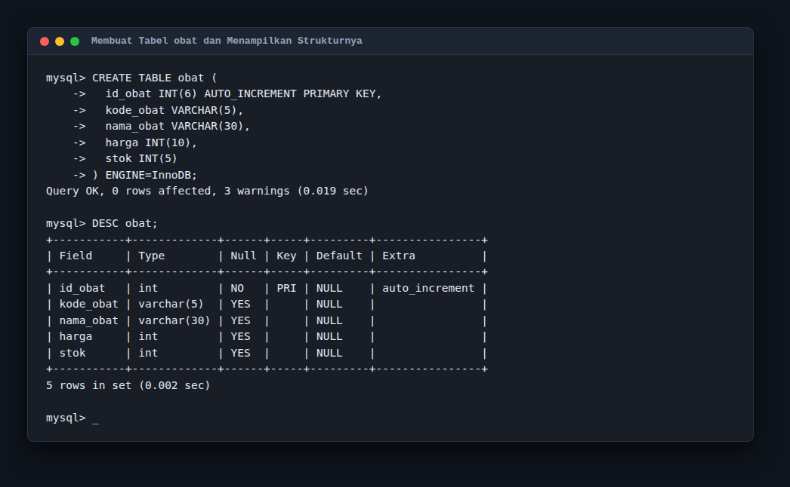
2) Membuat Tabel transaksi_obat
Tabel transaksi_obat mencatat transaksi dan memiliki relasi Foreign Key ke tabel pasien dan obat:
CREATE TABLE transaksi_obat (
id_transaksi INT(3) AUTO_INCREMENT PRIMARY KEY,
id_pasien INT(3),
id_obat INT(3),
jumlah INT(10),
total_harga INT(10),
CONSTRAINT fk_transaksi_pasien FOREIGN KEY (id_pasien) REFERENCES pasien(id_pasien) ON DELETE CASCADE,
CONSTRAINT fk_transaksi_obat FOREIGN KEY (id_obat) REFERENCES obat(id_obat) ON DELETE CASCADE
) ENGINE=InnoDB;
DESC transaksi_obat;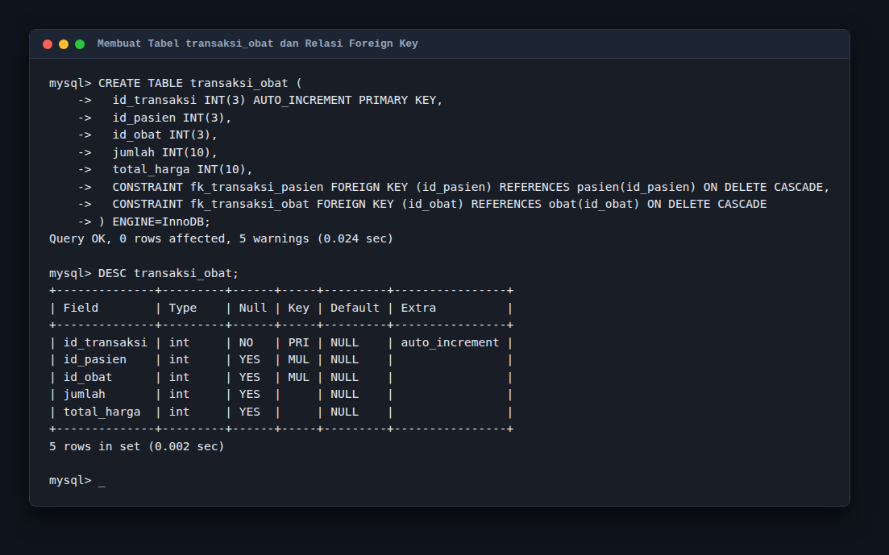
3) Membuat Trigger tg_jual
Sebelum membuat trigger, isi data awal tabel obat dengan 3 jenis obat (Amoxillin stok 20, Paracetamol stok 50, dan Antasida stok 30). Kemudian rancang trigger tg_jual:
INSERT INTO obat (id_obat, kode_obat, nama_obat, harga, stok) VALUES
(1, 'A001', 'Amoxillin', 5000, 20),
(2, 'A002', 'Paracetamol', 3000, 50),
(3, 'A003', 'Antasida', 4000, 30);
DELIMITER $$
CREATE TRIGGER tg_jual
AFTER INSERT ON transaksi_obat
FOR EACH ROW
BEGIN
UPDATE obat
SET stok = stok - NEW.jumlah
WHERE id_obat = NEW.id_obat;
END$$
DELIMITER ;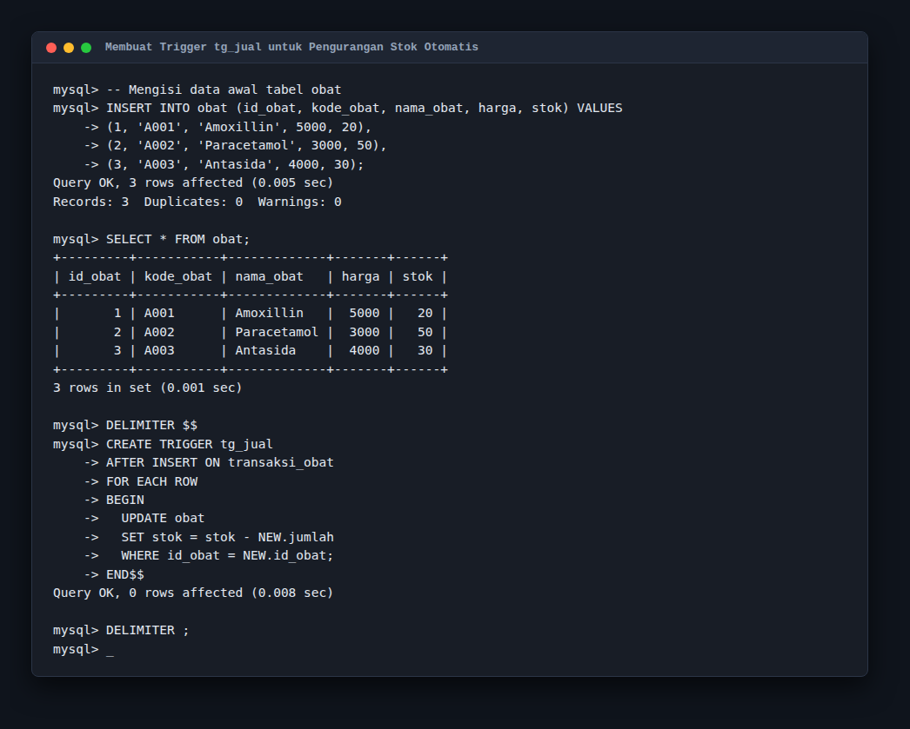
4) Pengujian Trigger Pengurangan Stok
Lakukan pengujian transaksi dengan menyimulasikan pasien (id_pasien=3) membeli 5 unit obat Amoxillin (id_obat=1):
INSERT INTO transaksi_obat (id_pasien, id_obat, jumlah, total_harga)
VALUES (3, 1, 5, 25000);
SELECT * FROM transaksi_obat;
SELECT * FROM obat;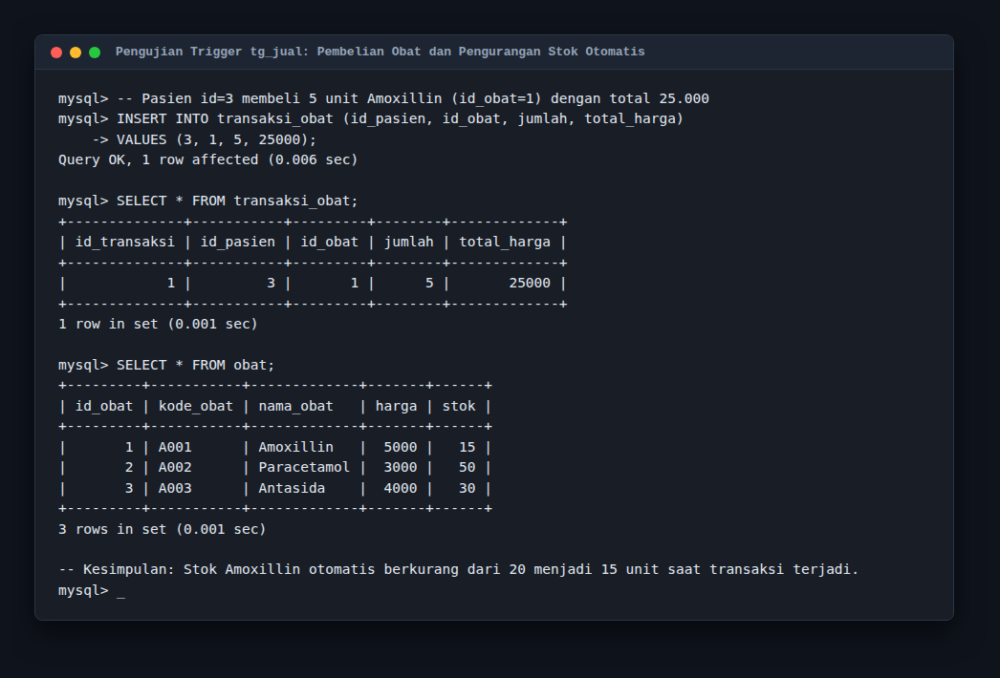
Analisis: Stok obat Amoxillin yang semula berjumlah 20 unit secara otomatis berkurang menjadi 15 unit. Trigger tg_jual berhasil mendeteksi event AFTER INSERT dan memperbarui data stok secara akurat dan konsisten.
A.7 Praktikum Basis Data Terdistribusi (Replikasi Master–Slave)
1) Konfigurasi Server Master & Pembuatan User Replikasi
Pada server Master, binary logging telah diaktifkan (server-id=1, log-bin=mysql-bin, binlog-do-db=rumah_sakit). Dibuat user khusus bernama prodisi dengan hak akses replikasi:
CREATE USER 'prodisi'@'%' IDENTIFIED BY 'prodisi';
GRANT REPLICATION SLAVE, REPLICATION CLIENT ON *.* TO 'prodisi'@'%';
FLUSH PRIVILEGES;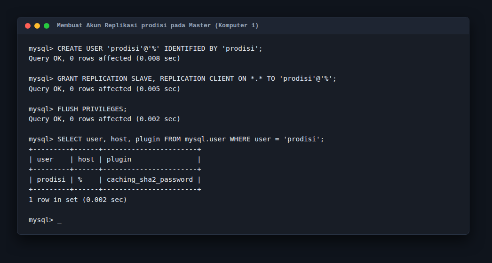
Periksa posisi binary log aktif pada Master menggunakan perintah:
SHOW BINARY LOG STATUS;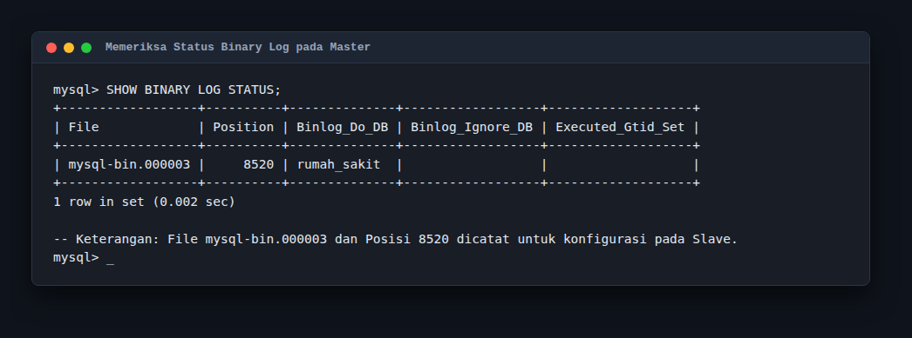
Tercatat file binary log adalah mysql-bin.000003 pada posisi 8520.
2) Konfigurasi Server Slave & Menjalankan Replikasi
Masuk ke terminal server Slave (Port 3307). Hubungkan server Slave ke server Master menggunakan parameter yang telah dicatat, kemudian jalankan thread replikasi:
STOP REPLICA;
CHANGE REPLICATION SOURCE TO
SOURCE_HOST='mysql_master',
SOURCE_USER='prodisi',
SOURCE_PASSWORD='prodisi',
SOURCE_PORT=3306,
SOURCE_LOG_FILE='mysql-bin.000003',
SOURCE_LOG_POS=8520,
GET_SOURCE_PUBLIC_KEY=1;
START REPLICA;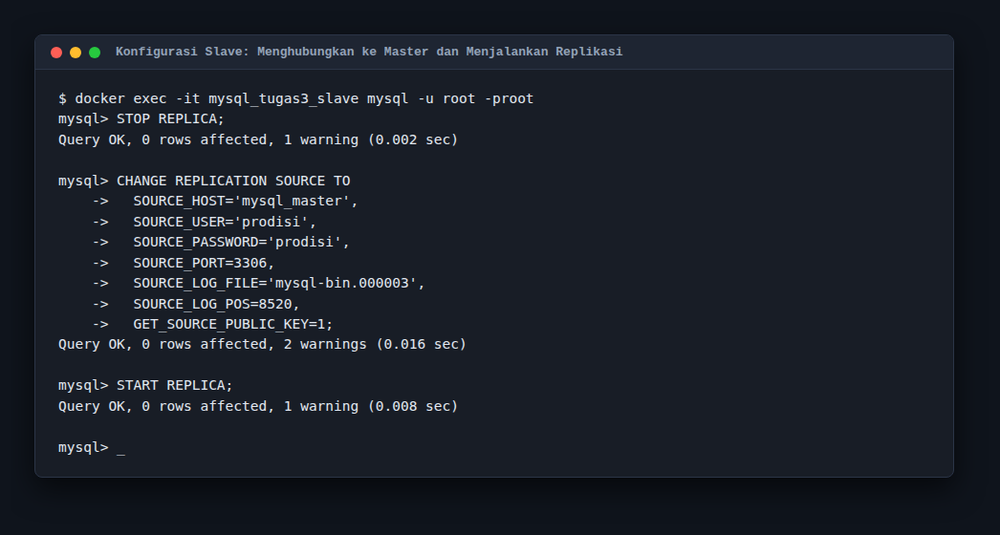
Periksa status kesehatan replikasi pada Slave:
SHOW REPLICA STATUS\G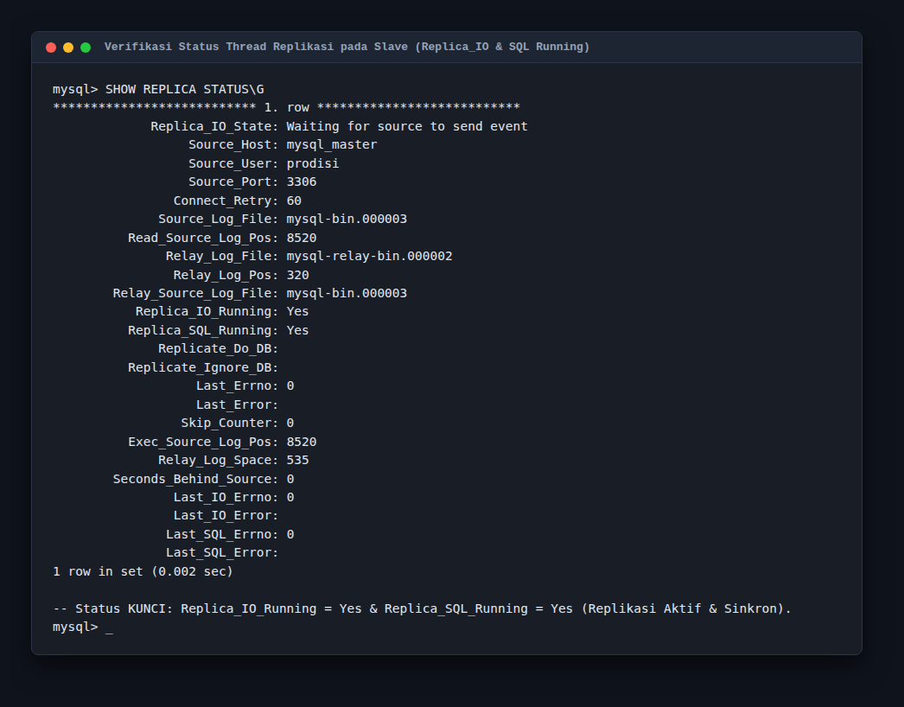
Verifikasi Status Kunci:
Replica_IO_Running: Yes(Slave berhasil terhubung ke Master dan membaca binary log stream).Replica_SQL_Running: Yes(Slave berhasil mengeksekusi transaksi dari relay log).Seconds_Behind_Source: 0(Tidak ada delay/antrean data replikasi).Last_IO_Errno: 0danLast_SQL_Errno: 0(Kondisi replikasi bebas kesalahan).
3) Pengujian Replikasi Data Nyata (Master ke Slave)
Untuk membuktikan bahwa sistem basis data terdistribusi telah berfungsi penuh secara real-time, dilakukan penambahan satu obat baru pada server Master (Port 3306): obat Demam (kode_obat='A005', harga=150, stok=100):
-- [EKSEKUSI PADA SERVER MASTER (Port 3306)]
INSERT INTO obat (kode_obat, nama_obat, harga, stok)
VALUES ('A005', 'Demam', 150, 100);
SELECT * FROM obat;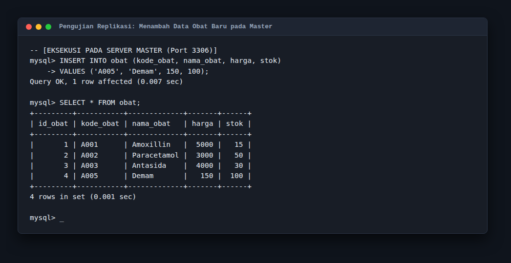
Segera periksa data pada server Slave (Port 3307) tanpa melakukan input manual apapun di Slave:
-- [PEMERIKSAAN PADA SERVER SLAVE (Port 3307)]
SELECT * FROM obat;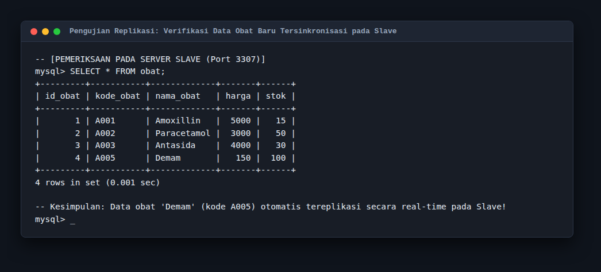
Analisis: Record obat baru 'Demam' (id_obat=4, kode_obat='A005') langsung muncul pada basis data Slave secara instan. Ini membuktikan proses replikasi basis data terdistribusi telah berjalan dengan sempurna.
B. Hasil Praktik
Dari serangkaian praktikum yang telah dilakukan, diperoleh rekapitulasi hasil sebagai berikut:
| No | Modul Pengujian | Skenario Uji | Hasil yang Diharapkan | Status |
|---|---|---|---|---|
| 1 | Storage Engine | Cek engine tabel basis data rumah_sakit |
Seluruh tabel berstatus Engine: InnoDB |
BERHASIL |
| 2 | Transaksi 1 | Insert pasien ID 6 tanpa COMMIT |
Data tidak tersimpan di tabel pasien |
BERHASIL |
| 3 | Transaksi 2 | Insert pasien ID 6 dengan COMMIT |
Data Tito (id=6) tersimpan permanen |
BERHASIL |
| 4 | Transaksi 3 | Update nama Popi → Danar + ROLLBACK |
Perubahan batal, nama tetap 'Popi' | BERHASIL |
| 5 | Transaksi 4 | Rollback insert & Commit update nama | Data baru batal, nama berubah 'Septin' | BERHASIL |
| 6 | Transaksi 5 | Insert bertahap dengan SAVEPOINT point1 |
ID 7 & 9 tersimpan; ID 8 dibatalkan | BERHASIL |
| 7 | Trigger tg_jual |
Pembelian 5 unit Amoxillin (stok 20) | Stok Amoxillin otomatis menjadi 15 | BERHASIL |
| 8 | Koneksi Replikasi | Slave terhubung ke Master via user prodisi |
Replica_IO_Running: Yes, SQL_Running: Yes |
BERHASIL |
| 9 | Sinkronisasi Replikasi | Insert obat 'Demam' A005 di Master | Data otomatis muncul di server Slave | BERHASIL |
C. Pembahasan Teknis
C.1 Prinsip ACID & Peran Storage Engine InnoDB
Transaksi merupakan unit kerja logika (logical unit of work) yang harus memenuhi kaidah ACID:
- Atomicity: Seluruh operasi dalam transaksi harus berhasil seluruhnya atau tidak sama sekali. Terbukti pada
transaksi1dantransaksi3, ketiadaan commit atau adanya rollback membatalkan seluruh efek operasi. - Consistency: Basis data bertransisi dari satu status valid ke status valid lainnya, dengan integritas constraint relasional yang tetap terjaga.
- Isolation: Operasi yang belum disahkan tidak dapat dilihat oleh transaksi lain, mencegah fenomena dirty read.
- Durability: Setelah perintah
COMMITdieksekusi (seperti padatransaksi2), perubahan data dijamin tersimpan permanen ke disk walau terjadi restart sistem.
MySQL menyediakan storage engine InnoDB yang memiliki kapabilitas redo log dan undo log untuk mengelola isolasi transaksi dan mekanisme rollback segment.
C.2 Mekanisme Otomatisasi Integritas Data via Trigger
Trigger adalah objek basis data yang terikat pada suatu tabel dan dieksekusi secara otomatis saat terjadi event DML (INSERT, UPDATE, atau DELETE). Pada praktikum ini, trigger tg_jual beroperasi dengan spesifikasi:
- Event:
AFTER INSERT ON transaksi_obat - Granularitas:
FOR EACH ROW - Variabel Pseudorow: Menggunakan
NEW.id_obatuntuk mengidentifikasi obat yang dibeli danNEW.jumlahuntuk mengambil kuantitas pembelian.
Penerapan trigger memindahkan logika bisnis pemotongan persediaan langsung ke layer DBMS, sehingga mencegah inkonsistensi stok akibat kesalahan kode di layer aplikasi (data integrity enforcement).
C.3 Arsitektur Basis Data Terdistribusi (Replikasi Master–Slave)
Replikasi data pada MySQL bekerja secara asinkron (asynchronous replication) dengan alur sebagai berikut:
- Setiap transaksi tulis (DML/DDL) yang terjadi pada Master dicatat ke dalam Binary Log (
mysql-bin). - Server Slave menjalankan Replica I/O Thread yang terhubung ke Master menggunakan akun khusus (
prodisi). Thread ini membaca rekaman binary log dari posisi terakhir (MASTER_LOG_POS) dan menulisnya ke dalam berkas Relay Log lokal (mysql-relay-bin). - Server Slave secara paralel menjalankan Replica SQL Thread yang membaca event dari Relay Log dan mengeksekusinya kembali pada basis data lokal Slave.
- Melalui arsitektur ini, beban query baca (read-heavy traffic) dapat didistribusikan ke node Slave (read scaling), dan node Slave sekaligus berfungsi sebagai cadangan data (failover redundancy).
D. Kata Penutup
Demikian laporan pelaksanaan Tugas 3 Praktikum Transaksi dan Basis Data Terdistribusi (MSIM4206) ini disusun. Melalui praktikum ini, telah berhasil dibuktikan implementasi manajemen transaksi ACID, otomasi kontrol integritas stok melalui trigger, serta konfigurasi dan sinkronisasi arsitektur basis data terdistribusi Master–Slave multi-node secara real-time.
Semoga laporan dan dokumentasi ini dapat memberikan gambaran komprehensif atas seluruh tahapan praktik yang telah dilaksanakan serta memenuhi seluruh kriteria penilaian akademik Universitas Terbuka. Terima kasih.